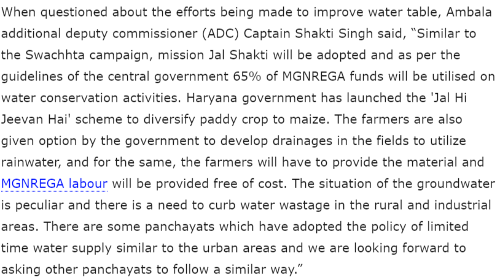

Problems
AMBALA: The groundwater situation in Ambala region is peculiar and there is an urgent need of keeping a check on the water wastage especially in the rural and industrial areas told the officials of the district administration. As per the information disclosed by the officials of public health and agriculture departments, in Ambala the groundwater is depleting similar to the other regions of northern Haryana during the hot weather and due to deficiency of rain the ground has not been able to recharge its water levels.
In Ambala,the groundwater is found on an average ranging from 250-300 feet. In some areas where water consumption is high, every year we have to install one or two pipes of 10ft length in the tubewells as the groundwater depletes during the summers due to increased demand and sowing of paddy.
Steps taking place to improve the condition
